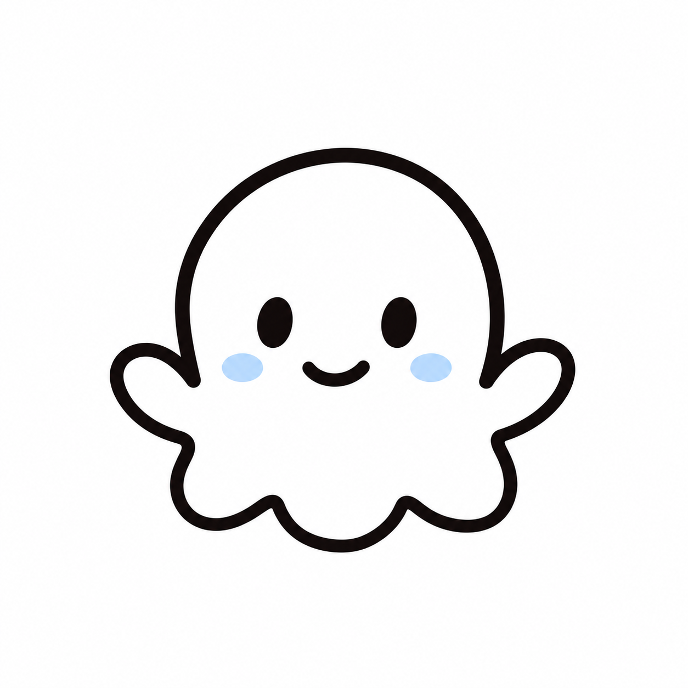

クーモ
おしゃべりな案内役
some clouds から生まれた、独立したキャラクター。
考えたり、話したり、
ときどき何かを教えてくれます。
some clouds の小さな仲間たち
some clouds には、
空をふわふわ漂う仲間たちがいます。

おしゃべりな案内役
some clouds から生まれた、独立したキャラクター。
考えたり、話したり、
ときどき何かを教えてくれます。

ちいさな仲間たち
くもくもから、ちぎれて生まれた小さな雲。
ふわふわ漂ったり、そばに寄りそったりする、
ペットのような静かな仲間たちです。

静かに見守る雲
some clouds にいる、大きな雲。
こくもたちのもとになった存在で、
話さず、静かにみんなを見守っています。
くもくもからこくもが生まれ、
クーモはその世界の中で動き、話します。
some clouds は、
そんな小さな仲間たちといっしょにできています。